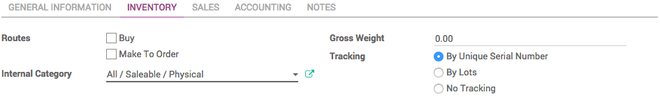
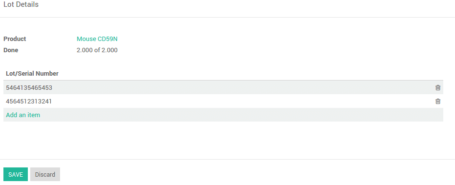
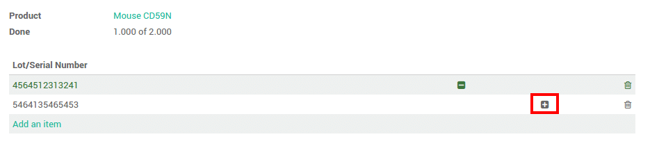
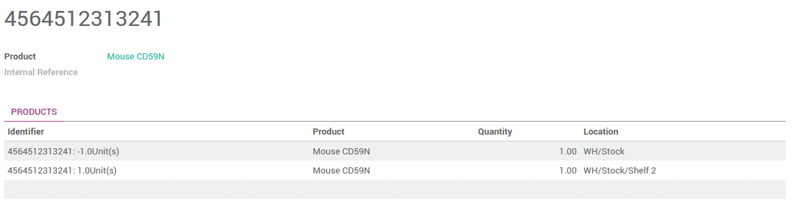

介绍
序列号追踪用来追踪带有序列号的产品的每个调拨移动。你可以追踪带有序列号的当前库位。当产品从一个库位移动到你个一个库位，系统会根据产品的最后一次移动确定产品当前的库位。所有你可以得到产品在移动过程中的每一个位置。
YuanCloud中的复式记账库存能让你进行非常高级的追踪。
设置
应用配置
你需要在设置中激活序列号追踪。在**库存**模块中，进入：[UNKNOWN NODE title_reference]，选择**跟踪批次或序列号码**。

点击 应用 。
产品配置
最后，需要配置哪些产品你想进行批次追踪。
进入：[UNKNOWN NODE title_reference]，打开所选产品，点击**编辑**并在**库存**页面选择**根据序列号**，然后点击**保存**。
管理序列号
调拨
为了能按照序列号对产品进行追踪，需要输入序列号()。
点击序列号图标：

一个窗口会弹出，点击**添加新条目**并输入序列号。
如果你要调拨一个已经有序列号的产品，这就会显示在列表中。只要点击**＋**图标，来确认你是在调拨这些序列号。
注解
在扫描枪页面，你只需要输入序列号。
库存调整
仓库中的产品的序列号追踪由2种方式：
根据产品盘点
一个序列号的库存
在常规盘点时，有一个**序列号**栏位，如果产品已经有批次号，那么这个栏位就会预先显示产品的批次号。
如果产品还没有诶盘点，点击**添加新的条目**，你就可以轻易的创建序列号，只需要在栏位中键入新的号码。

每一行的数量应该是1
你也可以给序列号做盘点。在该情景中，你需要输入序列号,你还可以在这里创建一个新的。只要键入号码，一个弹出框就会个产品链接。

序列号追踪
这些货物的序列号能让你对产品从收货开始，入库，以及买给谁，发货到哪里进行追踪。
要追踪一个产品，打开**库存**模块，在：[UNKNOWN NODE title_reference]，点击相关的序列号。
点击**追踪**按钮可以看到详细信息。